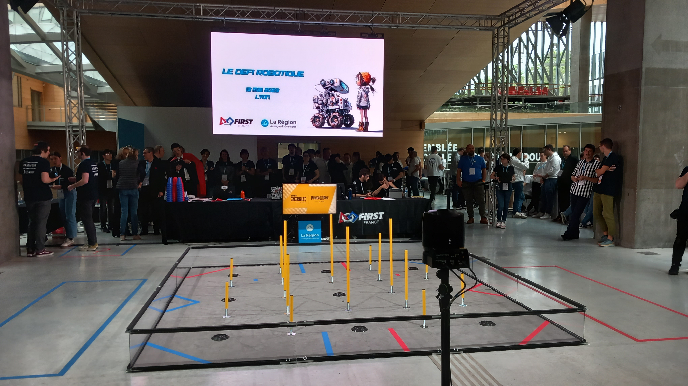
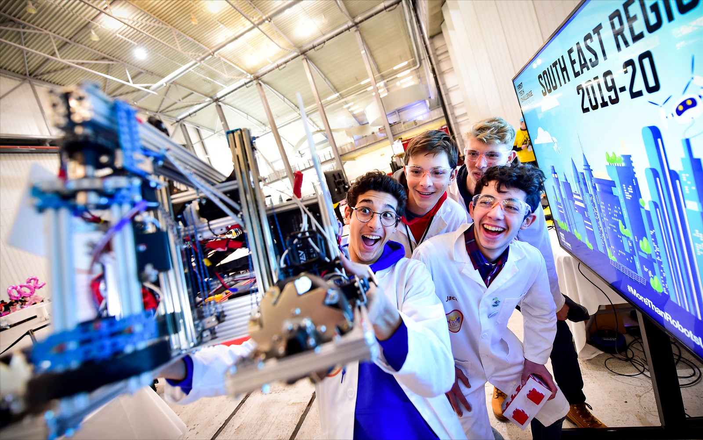
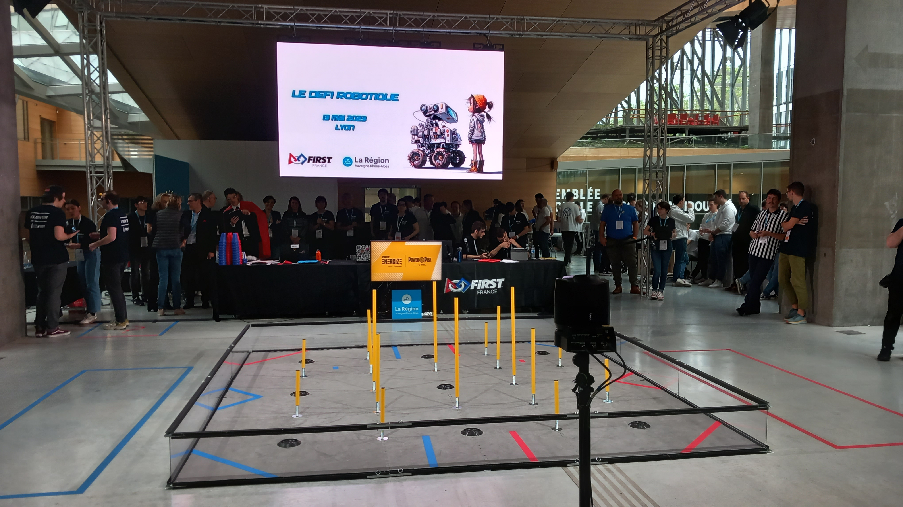
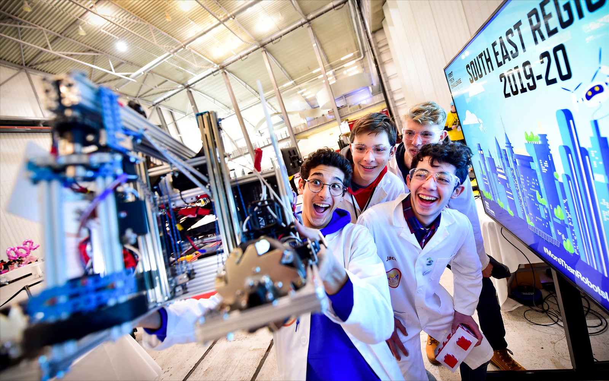

👋 Bienvenue au Club de Robotique du CIV !
Nous sommes une association établie au
Centre International de Valbonne
composée de 4 équipes. Nous sommes des dizaines d'élèves de la
troisième à la terminale, passionné.es par la programmation et la
construction de robots.
CIV sur Maps

 


